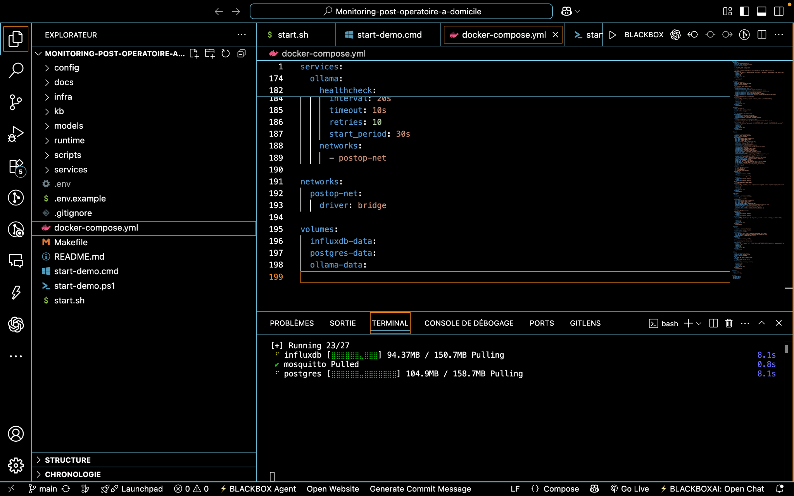
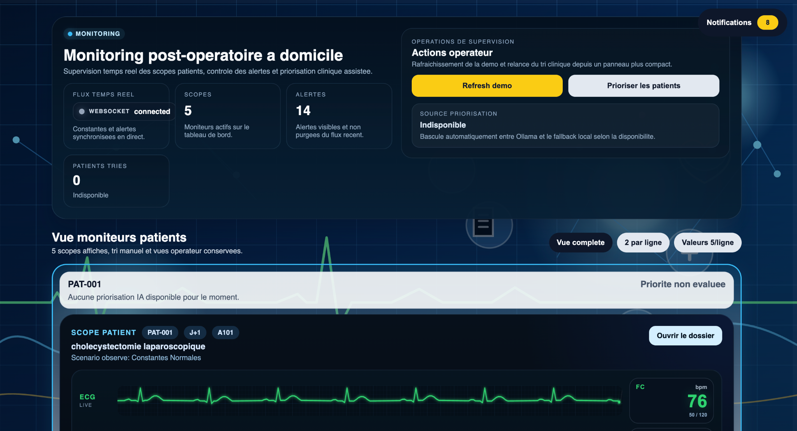
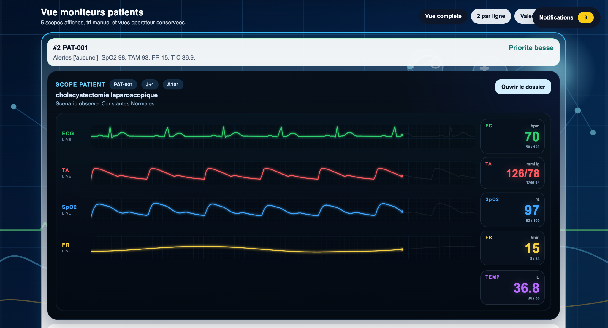
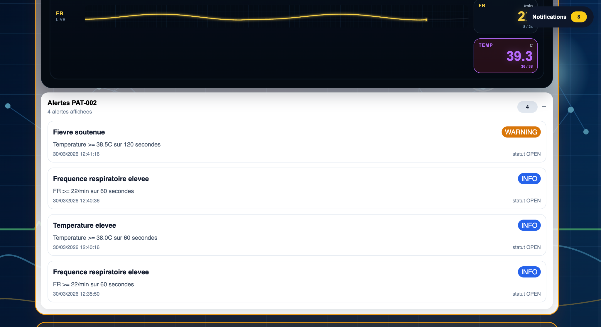
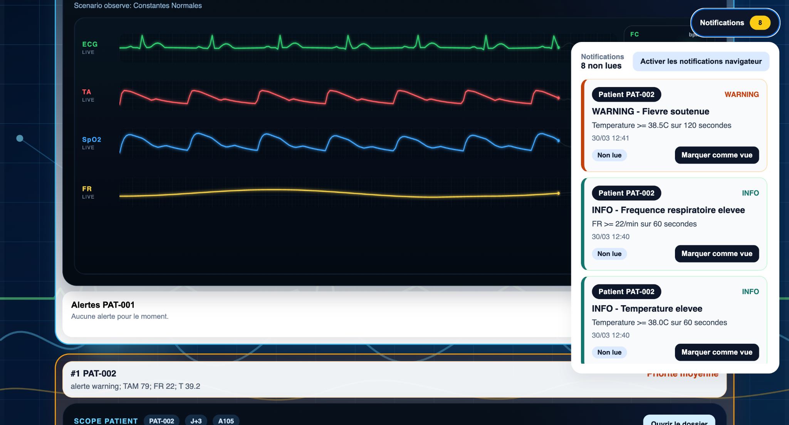
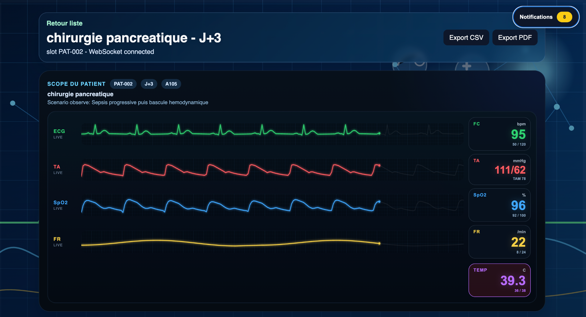
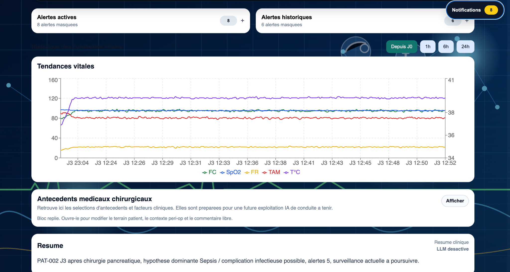
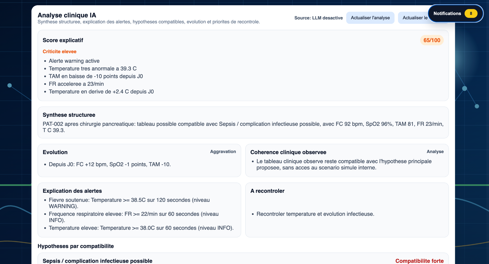

Projet Santé – Temps réel + Machine Learning
Système de monitoring en temps réel permettant de suivre les constantes vitales des patients. Intégration d'alertes automatiques et d'un moteur de priorisation clinique.
"Projet très solide démontrant une compréhension avancée des systèmes critiques en santé."
Interface principale avec vision globale des patients et alertes actives.

Visualisation temps réel des signaux vitaux avec mise à jour continue.

Suivi simultané ECG, tension, SpO2 et fréquence respiratoire.

Détection automatique des anomalies avec niveaux WARNING et INFO.

Interface de gestion des alertes en temps réel pour les opérateurs.

Vue complète avec évolution des constantes et analyse clinique.

Module d'analyse prédictive avec score de criticité.

Graphiques d’évolution pour aider à la prise de décision médicale.
